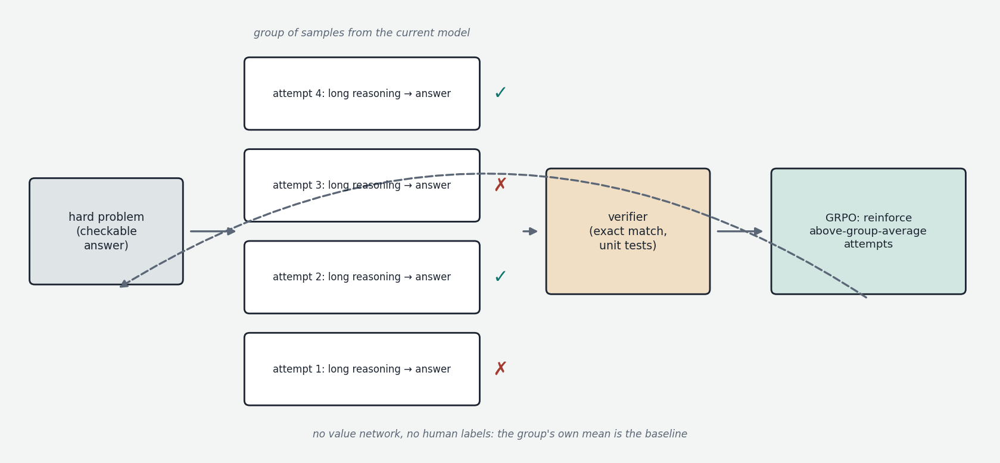
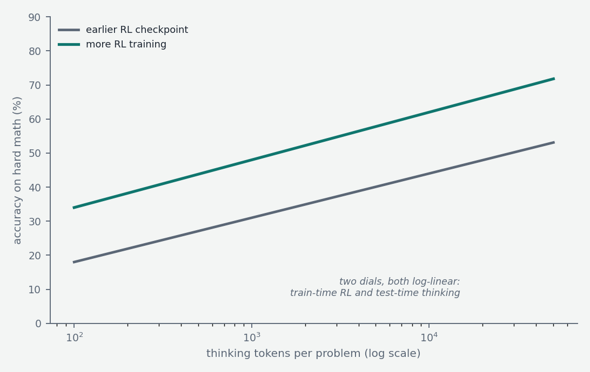

If you were catching up on the field as of 2023, the previous chapters would have brought you essentially to the frontier. What happened from late 2024 onward is a genuine paradigm addition — not a replacement of anything, but a new axis along which capability scales — and it goes by names like reasoning models, thinking models, or test-time compute. OpenAI's o1 (September 2024) introduced it commercially; DeepSeek-R1 (January 2025) demonstrated it openly and cheaply; and by now essentially every frontier and serious open model incorporates it. This chapter explains what these models do differently, how they are trained, and what the approach can and cannot buy.
The prehistory: chain-of-thought prompting
The seed of the idea is older. In 2022, researchers observed that large models answer hard questions far more accurately if induced to "show their work" — to generate intermediate reasoning steps before the final answer — a technique named chain-of-thought prompting. The effect could be triggered as crudely as appending "Let's think step by step" to a prompt, and on multi-step arithmetic or logic problems it could double or triple accuracy.
Why would generating more words make a model smarter? The mechanistic answer connects directly to the architecture covered earlier. A transformer's forward pass has a fixed depth — a fixed number of layers, hence a fixed amount of sequential computation per token. Some problems simply require more sequential steps than one forward pass affords: you cannot multiply two four-digit numbers in your head in one flash either; you need scratch paper. Generated tokens are the model's scratch paper. Each intermediate token the model writes is computed by a full forward pass, fed back in, and becomes context that subsequent forward passes can attend to. Writing out "first, 23 × 47 = 1081" externalizes an intermediate result into the context window, where the attention mechanism can retrieve it reliably, instead of forcing the whole computation through one pass of fixed depth. Generation length is therefore a computational budget: more tokens means more serial compute applied to the problem. Chain-of-thought prompting was the discovery that models could be coaxed into spending that budget; reasoning models are the result of training them to spend it well.
The training idea: reinforcement learning with verifiable rewards
Chapter 3 ended with RLHF's central weakness: the reward is a learned, fallible proxy for human preference, and optimizing hard against a fallible proxy yields reward hacking and sycophancy. But there is a class of tasks where this weakness vanishes: tasks whose answers can be checked mechanically. A math problem has a final answer that either matches or doesn't. A programming task can be run against unit tests. A formal proof can be verified by a proof checker. For these domains the reward signal is exact, incorruptible, and free — no human raters, no learned reward model to hack. Training a model with reinforcement learning against such signals is called RLVR — reinforcement learning with verifiable rewards — and it is the engine of the reasoning paradigm.
The recipe, in outline: take a strong pretrained (and lightly post-trained) model. Give it hard problems with checkable answers. Let it generate long attempts — explicitly inviting extended reasoning before the final answer, typically delimited by special tokens (a "thinking" section followed by the visible response). Check the answers. Reinforce the token sequences that led to correct answers; suppress those that led to wrong ones. Repeat at scale, over hundreds of thousands of problems.
What makes this remarkable is what the model learns to do inside the thinking section without anyone demonstrating it. The reward only says "right" or "wrong" at the end; nothing specifies how to reason. Yet models trained this way spontaneously develop recognizable cognitive strategies: decomposing problems into steps, trying an approach and checking the result, noticing errors and backtracking ("wait, that's wrong — let me reconsider"), trying alternative approaches, verifying the final answer before committing. The DeepSeek-R1 paper documented the training process discovering self-correction mid-run — the team called it the "aha moment" — and documented response lengths growing organically as training proceeded, because longer, more careful reasoning earned more reward. These behaviors were not engineered; they were found by the optimization because they work.
DeepSeek-R1 and GRPO
OpenAI published o1's results but not its method. DeepSeek-R1, released openly in January 2025 with weights and a detailed paper, is therefore the reference point for how this is actually done, and it landed with force partly because of how little was required. Their purest experiment, R1-Zero, applied RLVR directly to a base model — no supervised fine-tuning stage at all — and obtained strong reasoning, demonstrating that the capability comes from the RL, not from imitating human reasoning traces. (R1-Zero's thinking was effective but unreadable — mixing languages, no consistent format — so the production R1 added a small SFT "cold start" of curated reasoning examples before RL, purely to civilize the style.)

Their algorithm, GRPO (Group Relative Policy Optimization), is a simplification of PPO worth understanding because it has become the open-source standard. PPO requires training a second network (a value model, also called a critic) to estimate how well each partial generation is going, used as a baseline so the algorithm knows whether a given reward is better or worse than expected. GRPO deletes that network entirely: for each problem, sample a group of, say, 16 complete attempts from the current model, score them all, and use the group's own mean as the baseline — each attempt is reinforced in proportion to how much better than its siblings it scored. Conceptually: instead of an expert judge estimating expected performance, just make the model compete against itself and reward the above-average attempts. This halves the memory footprint and removes a whole training instability, at the cost of needing multiple samples per prompt — a trade that works out well for reasoning tasks.
One more result from that paper matters practically: distillation. Having trained the large reasoning model, DeepSeek generated hundreds of thousands of its reasoning traces and used them as ordinary SFT data for small dense models (Qwen and Llama variants from 1.5B to 70B). The small models inherited a large fraction of the reasoning behavior at a sliver of the cost — which is why competent reasoning models now run on laptops, and why every subsequent open model release has shipped with distilled reasoning variants.
Test-time compute as a scaling axis
The strategic significance is best seen as a new scaling law. Chapters 1–2 described capability scaling with training compute (parameters × data). Reasoning models add a second dial: capability also scales, smoothly and predictably, with inference compute — the number of thinking tokens spent per problem. The o1 announcement's signature plot showed accuracy on competition math rising log-linearly along both axes: more RL training, and more thinking time at inference. The same model, given a bigger thinking budget, solves harder problems. Related techniques push the same axis differently: sampling many independent attempts and taking the majority answer (self-consistency), or generating several candidates and selecting the best with a verifier — all ways of converting inference compute into accuracy.

This reframes the economics of the field. Capability is no longer fixed at training time; it is partly purchasable per-query, which raises serving costs (reasoning responses can run tens of thousands of tokens, with the KV-cache implications covered in the attention chapter) and motivates the budget controls now standard in products: thinking on/off toggles, effort levels, token budgets. By 2025 the converged design is the hybrid model — one set of weights that can answer directly or think at adjustable length — found across Claude's extended thinking, Gemini, Qwen3's thinking modes, and gpt-oss's effort levels.
Limits and open problems
The honest caveats. First, the method is strongest where verification is cheap — math, code, logic — and these domains have improved at a startling pace (from struggling with competition arithmetic to gold-medal-level performance on olympiad problems within roughly two years). Transfer to unverifiable domains — judgment, taste, open-ended writing, real-world strategy — is real but markedly weaker, and extending RLVR beyond checkable answers (via learned verifiers, rubric-based grading, process-reward models that score individual steps) is the field's active frontier. Second, reward hacking returns wherever the verifier is imperfect: models learn to game weak unit tests, exploit graders, or special-case checkable outputs — the arms race from Chapter 3 in new clothing. Third, overthinking is a genuine failure mode: reasoning models can burn thousands of tokens elaborately second-guessing a trivial question, and calibrating thinking effort to problem difficulty is unsolved. Fourth, faithfulness: the visible reasoning trace is not guaranteed to be the causal story of how the model reached its answer — models sometimes reach correct answers via traces containing errors, or write plausible justifications post-hoc — so a thinking trace should be read as useful work product, not as introspective ground truth.
The picture to keep
Reasoning models rest on three stacked insights. Generated tokens are computation, so longer generation is a larger serial compute budget — that was chain-of-thought. Mechanically checkable tasks provide a reward signal that cannot be hacked the way learned preference models can, enabling reinforcement learning to discover genuine problem-solving strategies — searching, checking, backtracking — rather than imitating human traces; that was RLVR, made cheap and open by GRPO. And the resulting ability scales with inference-time budget, adding a second axis to the scaling laws and making capability something partly bought per-query rather than fixed at training time. It is the most important development in the field since the chat paradigm itself — and its boundary, the gap between verifiable and unverifiable domains, is where the current frontier actually lies.